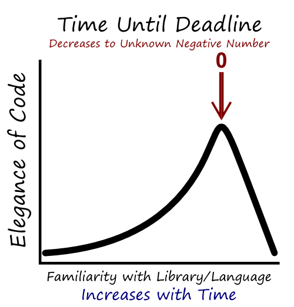

I’m coming to the end of a long digital humanities project that involves much coding at the database level and with Javascript for the user-facing frontend. It uses D3.js heavily, and does a few things that I think are innovative and exciting, and it leverages a large, esoteric database that features geospatial, network, temporal, and textual data. And I’ll be quite proud of it if it’s ever finished.
Except when it comes to the actual code.
Which is a mess.
We have only so much time to put into these projects, and they require investment across such a broad surface that it seems only natural that the better and more reusable and readable the code is, the more the content and user experience will suffer–and vice versa. Looking over the code, I can see the inefficient, primitive way I made Javascript do what I want, until I found out how to properly leverage array functions or d3.insert() syntax. There are places where I refactored the code to take advantage of these things–sometimes for speed and sometimes because of the deep neurotic understanding of what open source really means: That someone will actually look at this.